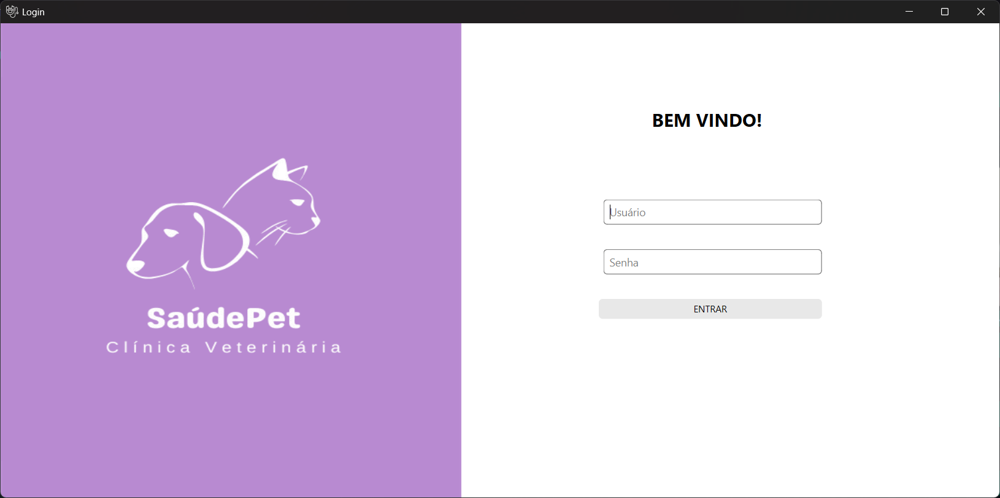
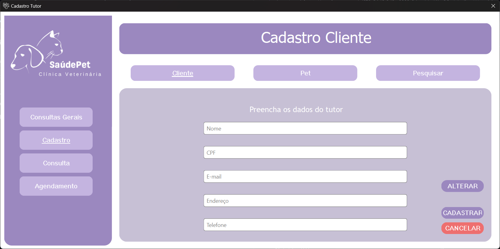
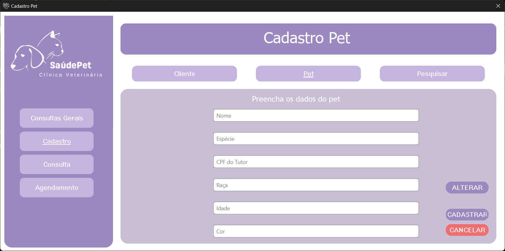
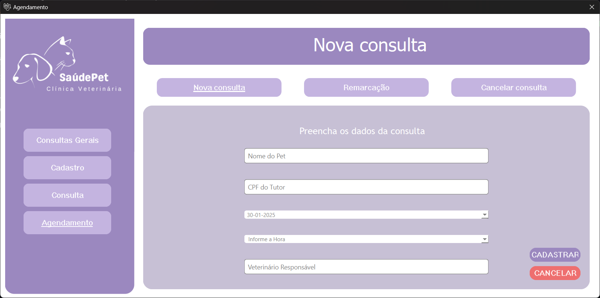
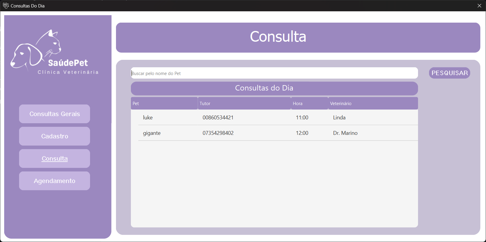
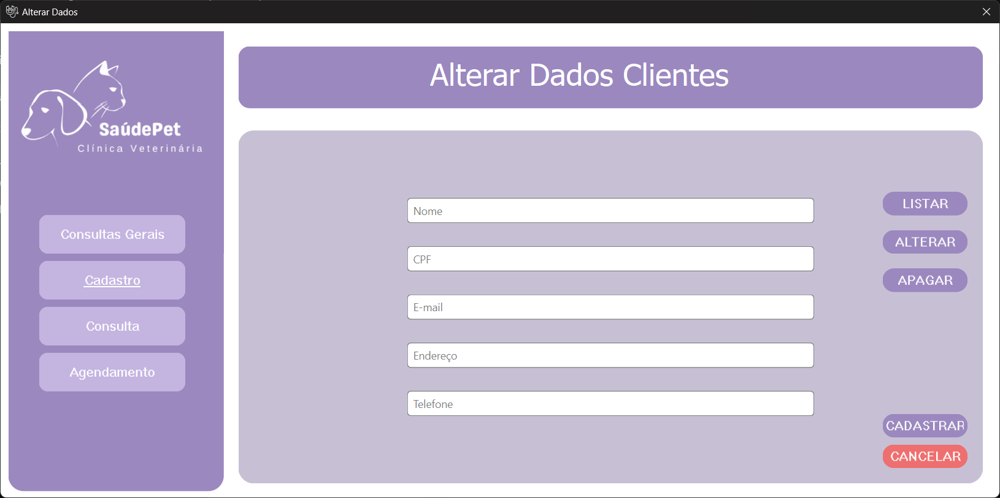
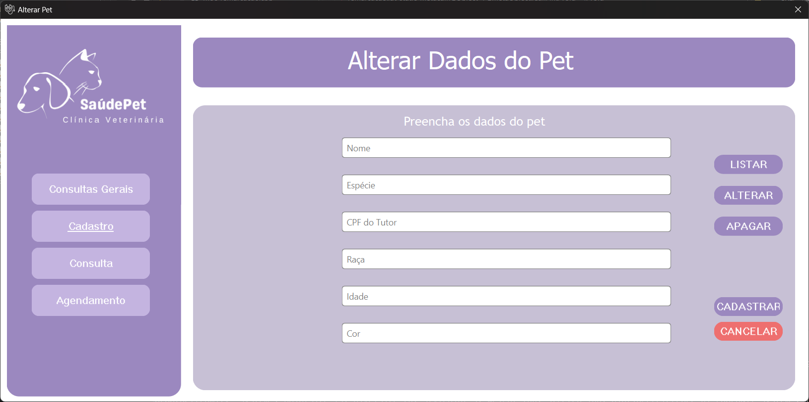

Tela de Login
A tela de login permite que o usuário insira suas credenciais para acessar o sistema. Ela verifica as credenciais fornecidas e, se forem válidas, redireciona o usuário para a tela principal do sistema.
Tela de Cadastro de Tutor
A tela de cadastro de tutor permite o cadastro de novos tutores, incluindo informações como nome, CPF, email, endereço e telefone. Os dados são armazenados em um arquivo JSON para persistência.
Tela de Cadastro de Pet
A tela de cadastro de pet permite o cadastro de novos pets, incluindo informações como nome, espécie, raça, idade, cor e CPF do tutor. Os dados dos pets também são armazenados em um arquivo JSON.
Tela de Agendamento de Consulta
A tela de agendamento de consulta permite o agendamento de novas consultas, incluindo informações como nome do pet, CPF do tutor, data, hora e veterinário responsável. As consultas são salvas em um arquivo JSON.
Tela de Cancelamento de Consulta
A tela de cancelamento de consulta permite o cancelamento de consultas existentes. As consultas canceladas são removidas do arquivo JSON de consultas.
Tela de Consultas do Dia
A tela de consultas do dia exibe as consultas agendadas para o dia atual. Ela carrega os dados do arquivo JSON de consultas e exibe as consultas do dia na interface.
Como o sistema gerencia os agendamentos e usuários
O sistema gerencia os agendamentos e usuários utilizando arquivos JSON para armazenamento de dados. A classe Database é responsável por gerenciar o acesso aos dados, fornecendo métodos para adicionar, recuperar e excluir dados de tutores, pets e consultas.
Gerenciamento de Tutores
Os tutores são gerenciados pelas classes cadastrocliente e cadastroalterar. A classe cadastrocliente permite o cadastro de novos tutores, enquanto a classe cadastroalterar permite a atualização e exclusão de dados de tutores. Os dados dos tutores são armazenados em um arquivo JSON, que é carregado e salvo conforme necessário.
Gerenciamento de Pets
Os pets são gerenciados pelas classes cadastropet e petalterar. A classe cadastropet permite o cadastro, listagem, atualização e exclusão de pets, enquanto a classe petalterar permite a atualização e exclusão de dados de pets existentes. Os dados dos pets são armazenados em um arquivo JSON, que é carregado e salvo conforme necessário.
Gerenciamento de Consultas
As consultas são gerenciadas pelas classes agendamento, remarcacao e cancelarconsulta. A classe agendamento permite o agendamento de novas consultas, a classe remarcacao permite a remarcação de consultas existentes, e a classe cancelarconsulta permite o cancelamento de consultas. As consultas são armazenadas em um arquivo JSON, que é carregado e salvo conforme necessário.
Exibição de Consultas do Dia
A classe consultasdodia é responsável por carregar e exibir as consultas agendadas para o dia atual. Ela carrega os dados do arquivo JSON de consultas e exibe as consultas do dia na interface.